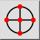
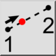
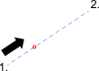

Tööriistariba / ikoon:


See tööriist võimaldab haarduda punkti, mis asub kahe punkti vahelisel kujuteldaval joonel antud kaugusel esimesest punktist.
See haardetööriist ei piira sisestatud kaugust, protsenti ega murdu. Kahe punkti vahelisest kaugusest suurema kauguse, 100-st suurema protsendi või 1,0-st suurema murru sisestamine võimaldab haarduda punkti, mis jääb teisest punktist kaugemale.
Esimesest punktist kaugemale jäävatesse punktidesse haardumiseks saab sisestada negatiivseid väärtusi.
Murde saab sisestada kümnendarvudena (0.5, 0.7) või murdudena (1/7, 3/11).
